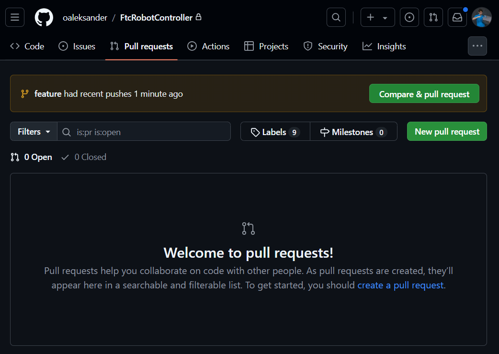
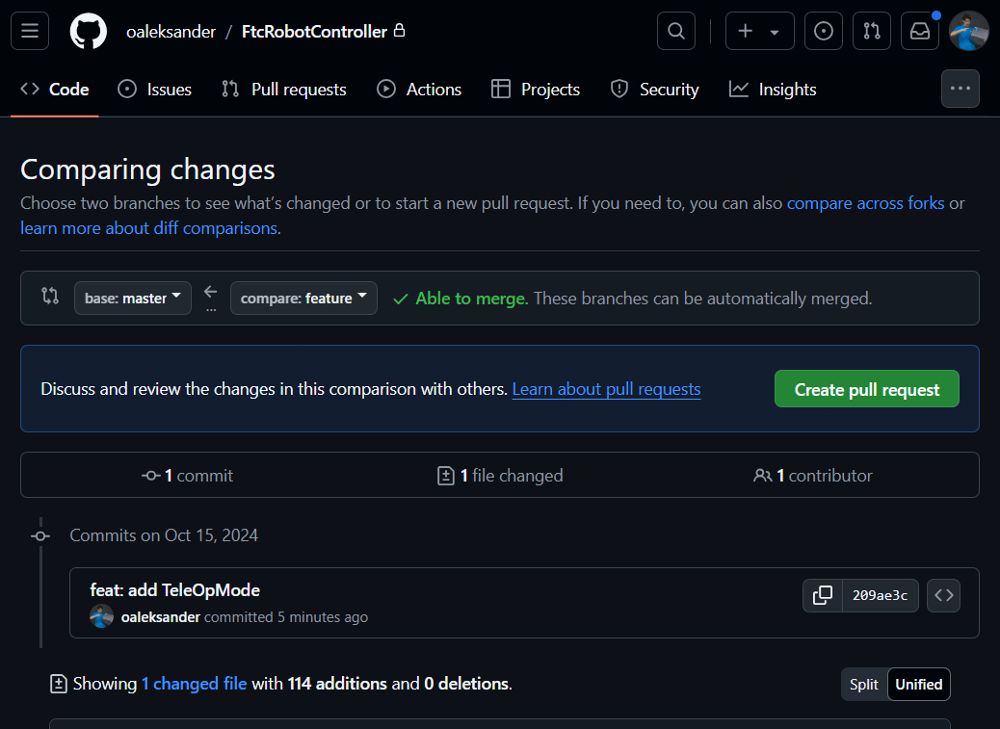
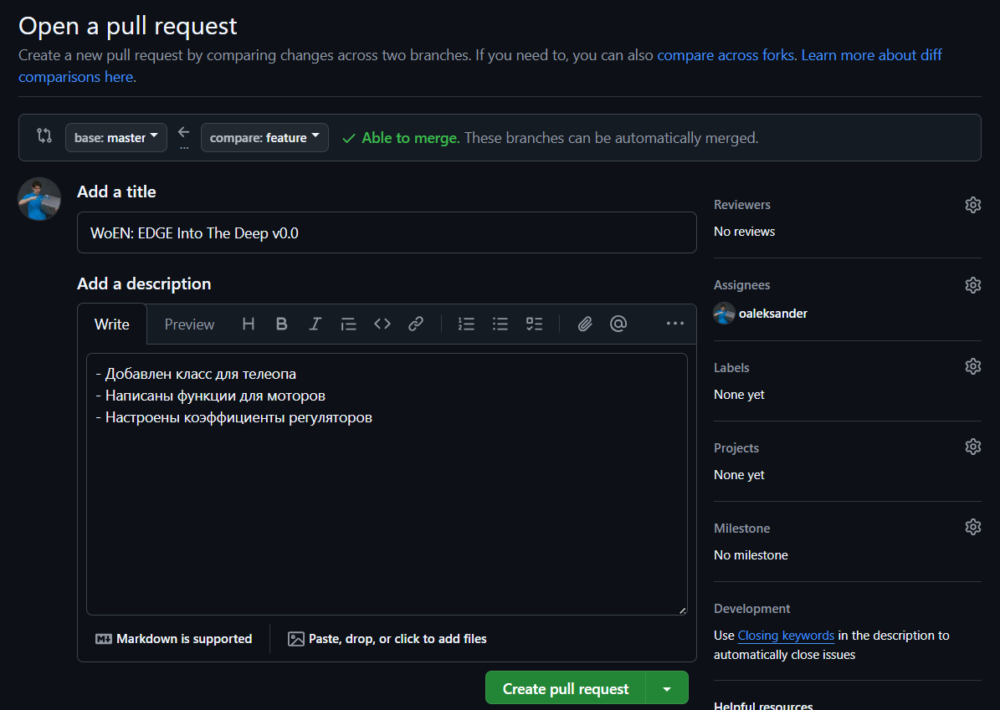
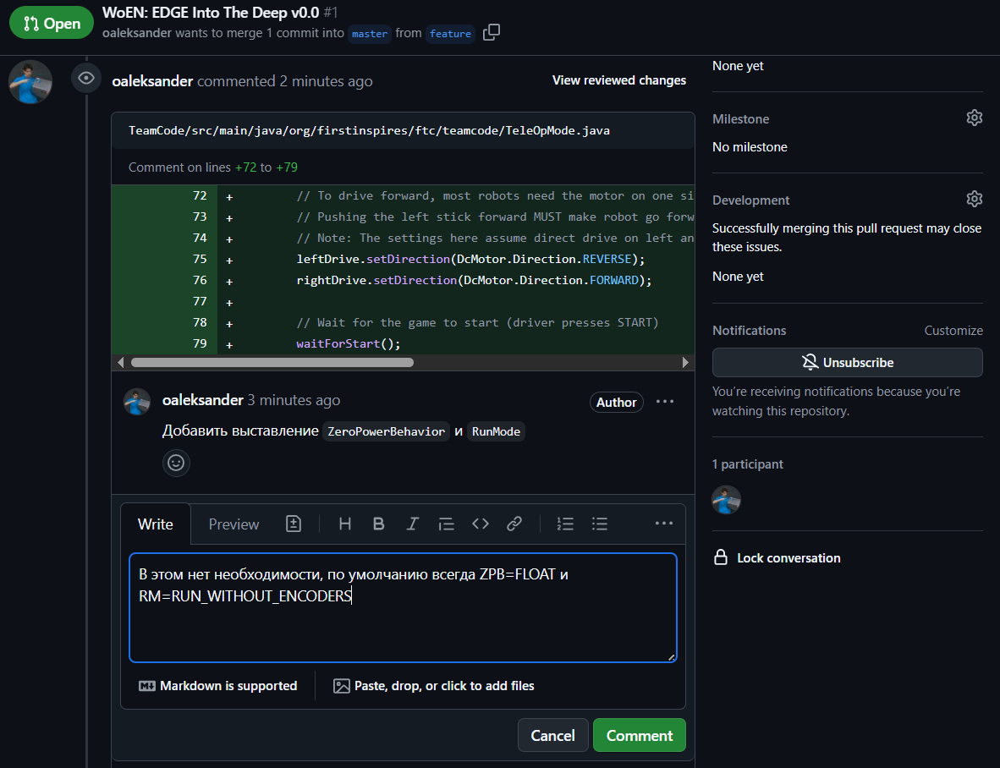
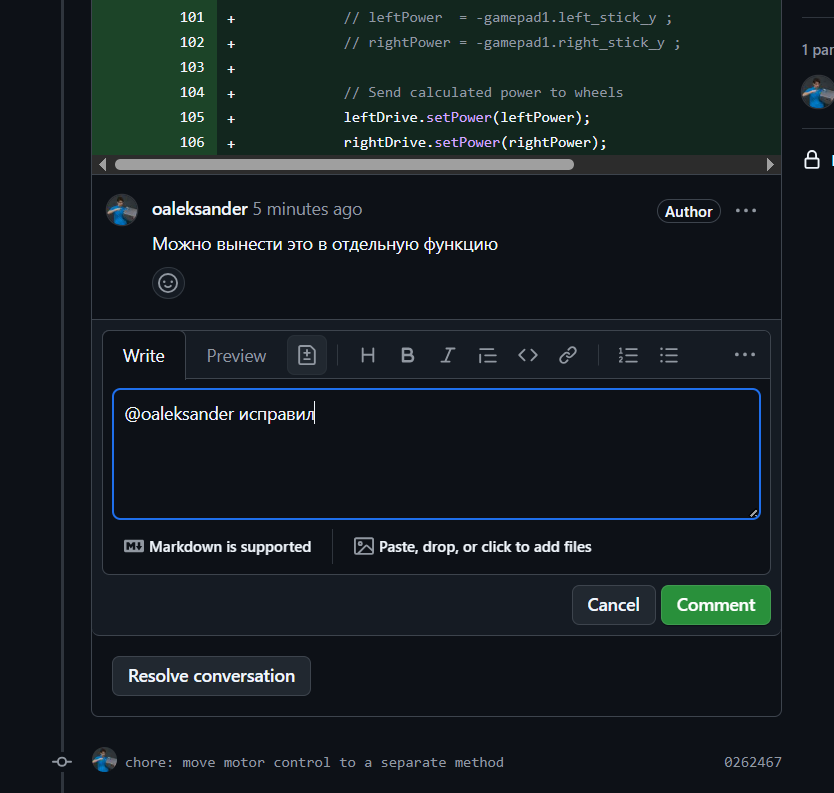
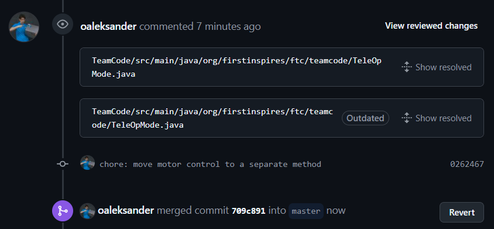

Git: Pull Request и код-ревью
С каждым релизом новой версии и при интеграции feature-веток
предлагается проходить процедуру код-ревью. Для этого можно
воспользоваться инструментом Pull Request на GitHub, позволяющим
осуществлять слияние веток только после стороннего аудита (просмотра) кода.
Возможные слияния веток:
-
develop<-feature
Один раз, после этогоfeature-ветка удаляется. Под очередной PR создается новая ветка. -
master<-develop
Несколько раз, под каждый релиз.
Краткое описание процесса
- Программисты создают коммиты в рабочей ветке
- Когда результат готов, программисты создают Pull request
- Ответственными (Assignees) назначаются программисты, аудиторами (Reviewers) - преподаватели
- (Reviewers) дают замечания по написанному коду
- (Assignees) исправляют замечания, создают новые коммиты
- (Reviewers) фиксируют исправления замечаний и закрывают Pull request.
1. Открытие Pull Request
Переходим в наш репозиторий, открываем вкладку Pull requests.
Нажимаем New pull request.

Выбираем ветки для слияния:
- base - Куда сливаем, главная ветка
- compare - Что сливаем, рабочая ветка (наша)
После выбора будут показаны коммиты, которые впоследствии будут добавлены к base ветке. Также необходимо убедиться, что ветки можно сливать - в feature должны быть все коммиты из base.
Наконец, нажимаем Create pull request

Теперь необходимо написать название и описание pull request.
Формат названия (title):
- Для релиза (
master<-develop):
WoEN: <название_команды> <Название_сезона> v<версия>
- Для фичи (
develop<-feature):
<название_фичи>
Описание (description) - в свободной форме, с кратким описанием того, что добавилось/удалилось/изменилось.
Также необходимо указать ответственных людей:
- Assignees - Люди, ответственные за написанный в ветке код.
(Среди них должен быть сам автор Pull request) - Reviewers - Люди, которые будут осуществлять код-ревью.
(Среди них должны быть преподаватели - как минимум@oaleksander)
После этого можно нажимать Create pull request.

2. Код-ревью
После открытия Pull request будет доступна соответствующая страница на GitHub, где Reviewers могут оставлять комментарии по поводу написанного Assignees кода.
-
Задача Reviewers: внимательно просмотреть все коммиты и дать замечания.
-
Задача Assignees: исправить замечания, либо объяснить, почему приняты именно такие решения.
Reviewer создает ветки дискуссии, выделяя конкретный участок кода.
Assignee может дать ответ замечаниям Reviewer в этой же ветке.

В случае, если Assignee принял замечания, он должен их исправить через
новый коммит в рабочей ветке.
(Кстати, на такой случай можно использовать тип коммита chore).
После добавления коммита он будет отражен в дискуссии Pull request.
Но можно также отдельно оповестить Reviewer (@) в соответствующей дискуссии,
что его замечания исправлены.

3. Cлияние веток
Необходимые условия для слияния веток:
- Все дискуссии закрыты (resolved).
- У рабочей ветки нет конфликтов с целевой.
- Последний коммит в целевой ветке проходит pipeline (проект собирается).

После выполнения необходимых условий один из Reviewers осуществляет слияние веток. После этого Pull request считается закрытым.